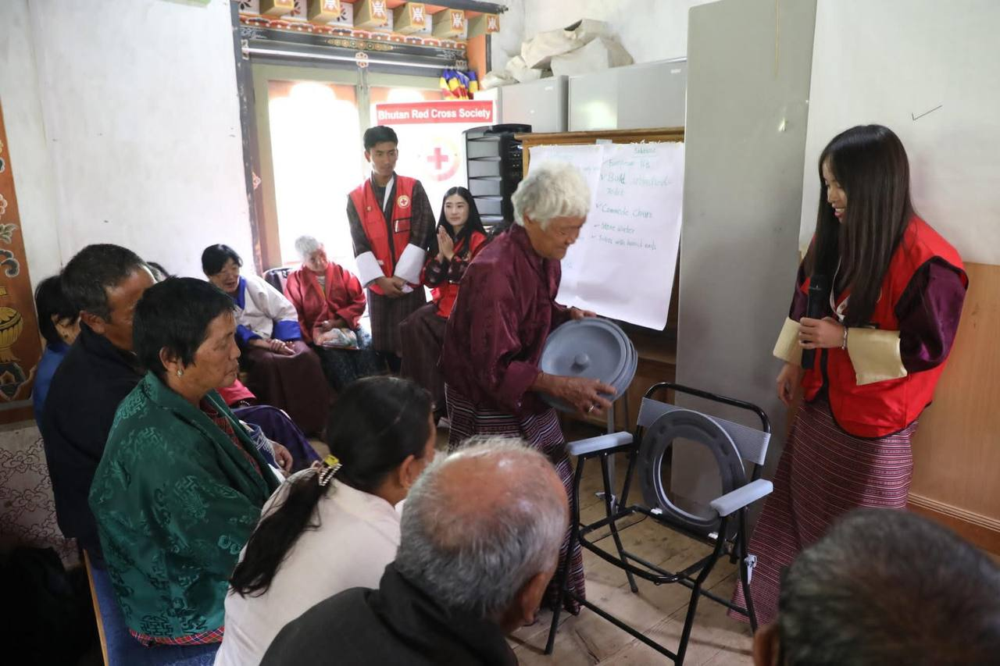

“Respecting elders is respecting the roots that keep us grounded.”

Simple Steps for Vibrant Aging
Healthy aging is about small, steady habits that boost quality of life and independence.
📖 Sources: Health.com • Washington Post
Healthy aging tips for older adults — stay active, eat balanced meals, and nurture social connections.
“Young volunteers bridging generations with service and compassion.”
 Volunteer Registration Form